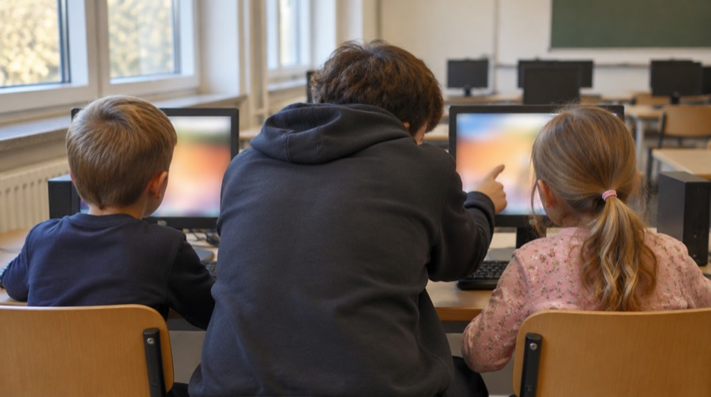
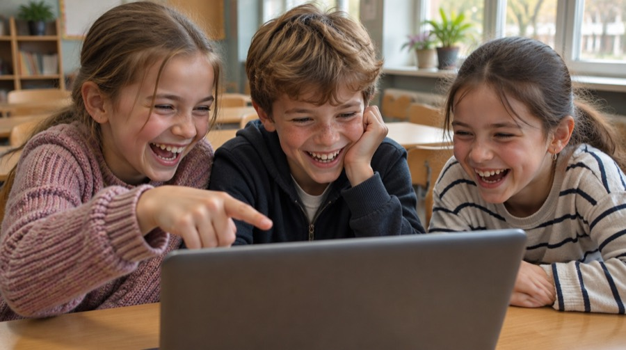
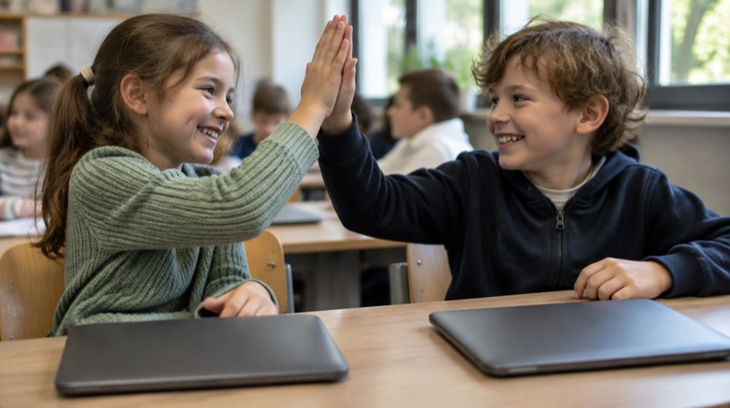
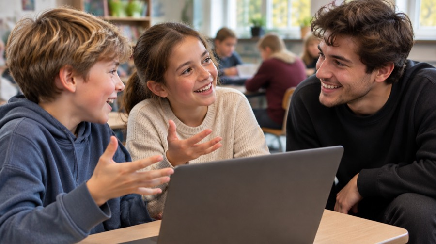
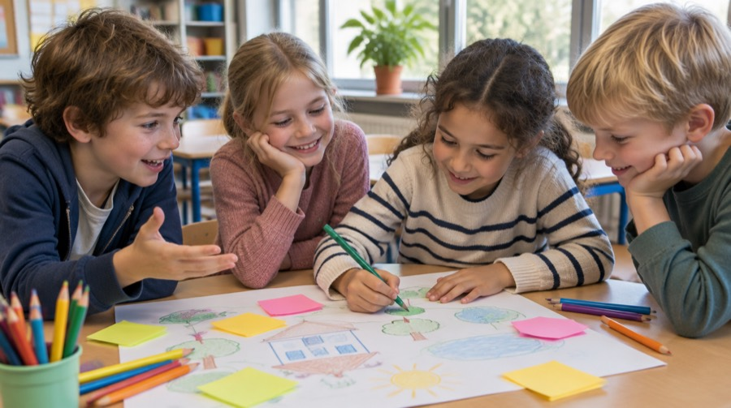

Kūrėjų klubas: paketas pardavimui
Viskas vienoje vietoje, be jokių prisijungimų: puslapis tėvams ir mokykloms, nuorodos kiekvienai mokyklai, paruošti tekstai, atsakymai į prieštaravimus ir video būsena. Tekstus kopijuokite mygtuku.
Atidaryti puslapį tėvams Blokas mokykloms
1Nuorodos kiekvienai mokyklai
Kiekviena nuoroda atidaro tą patį puslapį, bet formoje jau pažymėta mokykla, o mes matome, iš kurios mokyklos atėjo tėvai. Šią nuorodą dėkite į dienyno žinutę ir į bilieto QR kodą.
Kitai mokyklai: tėvai formoje renkasi „Kita mokykla“ ir patenka į laukiančiųjų sąrašą.
2Faktai (visur vienodi)
- 1–4 klasėMinecraft ir programavimas
- 4 pamokos po 45 minkartą per savaitę
- Lapkričio 23 d. – gruodžio 18 d.vaiko mokykloje po pamokų
- Iki 24 vaikųgrupė startuoja nuo 8
- 25 € už visas 4 pamokasviena suma
- Registracija iki lapkričio 21 d.lapkričio 22 d. pranešame, ar grupė susirinko
Ką vaikai daro per 4 pamokas
- Komanda ir užduotis. Susiskirsto komandomis, pasirenka roles, išmoksta judėti ir statyti.
- Bazė Marse. Komanda planuoja ir stato koloniją Marse.
- Robotas padėjėjas. Vaikas kodo blokais suprogramuoja robotą, kuris stato už jį. Mentorius parodo, kaip kodą rašo dirbtinis intelektas ir kur jis klysta.
- Pristatymas. Komanda parodo tėvams, ką sukūrė.
Ko nesakome
- Nežadame geresnių pažymių ir nesakome „įrodyta“.
- Nesakome „DI programavimas“. Vaikai programuoja kodo blokais, o dirbtinį intelektą rodo tik mentorius.
- Visur, kur minimas Minecraft, lieka eilutė: „Nėra oficiali Minecraft Education paslauga. Nesusijusi su Mojang ar Microsoft.“
3Tekstai kopijavimui
Laužtiniuose skliaustuose yra tai, ką įrašote patys: mokykla, diena, laikas, nuoroda iš 1 skyriaus.
Tėvams: dienynas, FB grupė, ExoClass grupės aprašymas
Jūsų vaikas jau žaidžia Minecraft. Pas mus jis jame kuria. Kūrėjų klube vaikai Minecraft Education pasaulyje komandomis stato bazę Marse ir kodo blokais suprogramuoja robotą padėjėją, kuris stato už juos. Šalia visą laiką mentorius, savo paskyros vaikui nereikia. Ketvirtą pamoką vaikas jums pats parodys, ką sukūrė. Kam: 1–4 klasė Kada: [diena], [laikas], 45 min, kartą per savaitę Trukmė: 4 pamokos, lapkričio 23 d. – gruodžio 18 d. Kur: [mokykla], po pamokų Grupė: iki 24 vaikų Kaina: 25 € už visas 4 pamokas Vietą rezervuokite iki lapkričio 21 d.: [nuoroda] Lapkričio 22 d. parašysime, ar grupė susirinko, ir atsiųsime mokėjimo nuorodą. Iki tol nieko mokėti nereikia. Klubą veda Robotikos akademija. Nėra oficiali Minecraft Education paslauga. Nesusijusi su Mojang ar Microsoft.
Mokyklos žinutė tėvams (mokykla persiunčia be pakeitimų)
Antraštė: Nauja: Kūrėjų klubas [mokyklos pavadinimas] 1–4 klasėms Gerbiami tėveliai, nuo lapkričio 23 d. mūsų mokykloje 4 savaites veiks Robotikos akademijos Kūrėjų klubas. Vaikai Minecraft Education pasaulyje komandomis statys bazę Marse, kodo blokais suprogramuos robotą padėjėją ir pristatys savo darbą. Kam: 1–4 klasių mokiniams Kada: [diena], [laikas], 45 min, kartą per savaitę, 4 pamokos (lapkričio 23 d. – gruodžio 18 d.) Kur: [klasė], po pamokų Vietos: iki 24 vaikų grupėje Kaina: 25 € už visas 4 pamokas Paskutinę pamoką vaikai parodys tėvams, ką sukūrė. Vietą rezervuokite iki lapkričio 21 d.: [nuoroda] Grupė startuoja, kai užsiregistruoja bent 8 vaikai. Lapkričio 22 d. Robotikos akademija parašys, ar grupė susirinko, ir atsiųs mokėjimo nuorodą. Iki tol nieko mokėti nereikia. Robotikos akademija: 110+ mentorių, 650+ vietų visoje Lietuvoje. Nėra oficiali Minecraft Education paslauga. Nesusijusi su Mojang ar Microsoft.
Mokyklai: direktoriui ar pavaduotojui
4 savaitės, mokyklai nekainuoja. Lapkričio 23 d. – gruodžio 18 d. Robotikos akademija jūsų mokykloje nori išbandyti naują klubą 1–4 klasėms: vaikai Minecraft Education pasaulyje komandomis stato bazę Marse ir kodo blokais programuoja robotą padėjėją. Mentorių, programą ir registraciją atneša Robotikos akademija. Paskutinę pamoką vaikai pristato savo darbus tėvams, o gruodžio pabaigoje jūs gaunate trumpą ataskaitą: kiek vaikų lankė, ką sukūrė, ką sakė tėvai. Ko reikia iš mokyklos: 1. Kompiuterių klasės kartą per savaitę, 45 min po pamokų 2. Vienos žinutės tėvams per dienyną (tekstą atsiunčiame paruoštą) 3. 5 minučių per pertrauką pristatyti klubą 1–4 klasėse Grupė: iki 24 vaikų. Startuojame, kai iki lapkričio 21 d. užsiregistruoja bent 8. Daugiau: https://krisvas333.github.io/ra-minecraft/kureju-klubas/?src=mokyklai#mokykloms Patvirtinkite dieną ir laiką: Povilas Zmejauskas, [telefonas]
Vaikams: 30 sekundžių klasėje
„Kas žaidžia Minecraft? Rankas aukštyn! O kas yra pastatęs bazę Marse? Kas yra suprogramavęs robotą, kuris stato už tave? Kūrėjų klube tai padarysite per 4 pamokas, o paskutinę parodysite tėvams. Nuneškite šitą bilietą namo šiandien!“
Bilietas namo (su QR kodu į mokyklos nuorodą)
KŪRĖJŲ KLUBO BILIETAS Šis vaikas pakviestas statyti bazę Marse ir programuoti robotą padėjėją. 4 pamokos [mokykloje] nuo lapkričio 23 d. savaitės. Vietų: 24. Rezervacija iki lapkričio 21 d. [QR kodas] Robotikos akademija. Nėra oficiali Minecraft Education paslauga.
46 atsakymai į prieštaravimus
| Ką sako | Ką atsakyti |
|---|---|
| „Kodėl mokėti už bandymą?“ | Mokate 25 € už 4 tikras pamokas su mentoriumi, o ketvirtą pamoką patys matote, ką vaikas sukūrė. |
| „Brangu“ | Tai 6,25 € už pamoką. Mokate tik tada, kai grupė patvirtinta. Jei grupė nesusirenka, nemokate nieko. |
| „Vaikas ir taip per daug prie ekrano“ | Čia ekranas yra darbo įrankis: 45 min vaikas su komanda stato ir programuoja, šalia mentorius. Geresnių pažymių nežadame. |
| „Kas ves?“ | [mentoriaus vardas], Robotikos akademijos mentorius. |
| „Kas bus po 4 pamokų?“ | Paskutinę pamoką vaikas parodo, ką sukūrė, o jūs nusprendžiate, ar tęsti nuo sausio. |
| Mokykla: „gruodis per užimtas“ | Iš jūsų reikia tik kompiuterių klasės 45 minutėms ir vienos žinutės tėvams. Visa kita darome mes. |
5Video
Būsena: dar ne. Klubo video dar nesumontuotas, scenarijų turi patvirtinti Kristijonas. Kai bus paruoštas, jis atsiras puslapyje tėvams atskiru bloku, nuoroda nesikeis.
Puslapyje jau dabar yra vienas oficialus Minecraft Education video apie robotą padėjėją ir kodo blokus.
Kadrai būsimam video. Sukurti dirbtiniu intelektu, tikrų vaikų juose nėra.





63–4 m. klubas darželiuose
Vyksta tik tada, kai 1–2 darželiai patvirtina dieną. Jei ne, keliam į sausį. Atskiro puslapio šiam bandymui dar nėra. Tekstuose robotą vadiname tiesiog „robotas“.
Tėvams (darželio grupės žinutė)
Pirmoji jūsų vaiko sukurta programa. Be ekrano. Kūrėjų klube vaikai mygtukais ant roboto nugaros sukuria jam kelią per pasakų knygos žemėlapį. Skaičiuoja žingsnius, kartoja naujus žodžius lietuviškai ir angliškai, o jei robotas nuvažiuoja ne ten, bando dar kartą. Planšečių ir telefonų nėra: knyga, robotas ir draugas šalia. Kam: 3–4 metų vaikams Kada: [diena], [laikas], 30 min, kartą per savaitę Trukmė: 4 užsiėmimai, lapkričio 23 d. – gruodžio 18 d. Kur: [darželis], dienos metu Grupė: iki 10 vaikų, vienas robotas dviem Kaina: 25 € už visus 4 užsiėmimus Registracija iki lapkričio 21 d.: [nuoroda]
Darželiui (direktorei ar pavaduotojai)
4 savaitės, be papildomo darbo auklėtojoms. Lapkričio 23 d. – gruodžio 18 d. Robotikos akademija jūsų darželyje nori išbandyti Kūrėjų klubą 3–4 metų vaikams. Mentorius atvyksta į grupę ir atsiveža robotus, žemėlapius ir knygas, ekranų nenaudojame. Paskutinę savaitę tėvai pamato, ką vaikai išmoko, o jūs gaunate trumpą ataskaitą. Ko reikia iš darželio: 1. 30 minučių kartą per savaitę dienos metu 2. Vienos žinutės tėvams (tekstą atsiunčiame paruoštą) Grupė: iki 10 vaikų. Startuojame, kai iki lapkričio 21 d. užsiregistruoja bent 8. Patvirtinkite dieną ir laiką: Povilas Zmejauskas, [telefonas]
Vaikams (veiksmas, ne kalba)
„Robotukas pasiklydo! Kas padės jam nueiti iki liūto?“ Vienas vaikas spaudžia mygtukus, visi garsiai skaičiuoja žingsnius. Robotas nuvažiavo ne ten? Kuriam naują kelią.
7Kas dar atvira
- Diena ir valanda kiekvienoje mokykloje. Puslapis tėvams žada jas patvirtinti iki lapkričio 18 d. Kai žinosite, parašykite Kristijonui, įrašysime per kelias minutes.
- ExoClass grupės. Kai grupė sukurta, jos nuorodą įdedame prie mokyklos, ir mygtukas veda tiesiai į registraciją bei mokėjimą. Iki tol veikia rezervacijos forma.
- Kas atsako tėvams. Puslapis žada patvirtinti rezervaciją el. paštu per 1 darbo dieną ir lapkričio 22 d. parašyti, ar grupė susirinko.
- Kompiuteriai ir licencijos. Ar mokykloje yra 24 veikiantys kompiuteriai su Minecraft Education licencijomis ir kieno prisijungimais jungsis vaikai.
- Mentoriai. Kas veda kiekvieną grupę ir kiek mentorių reikia 24 vaikams. Puslapyje dabar įrašyti Kristijonas ir Povilas, nuotraukų dar nėra.
- 3 pamoka. Roboto padėjėjo ir dirbtinio intelekto užduotį reikia įdėti į Marso pamokų planą.
Vidinis Robotikos akademijos puslapis komandai. Paieškos sistemos jo nerodo, bet nuorodą gali atidaryti kiekvienas, kas ją turi, todėl čia nėra tėvų ar vaikų duomenų. Nėra oficiali Minecraft Education paslauga. Nesusijusi su Mojang ar Microsoft.